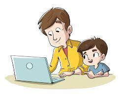

Paso 1:
Comienza con algo simple. Haz que tu hijo abra Word, que vaya al menú de "Archivo" y haga clic en "Nuevo". Esto le dará un documento en blanco. Muéstrale las bases de escribir en un teclado de computadora, como hacer las mayúsculas o hacer espacios. Muéstrale cómo usar la tecla de "Tabulación" para escribir más lejos del margen. No querrás abrumarlo con demasiada información. Todo lo que necesita es lo suficiente para crear una historia apropiadamente escrita. Mantente en la página por defecto de Word por el momento.
Paso 2:
Pídele a tu hijo que escriba una historia corta, más o menos de media página. Este es un proyecto divertido que disfrutará, con el beneficio añadido que le ayudará a acostumbrarse con los elementos básicos de escritura que le acabas de mostrar. Una vez termine la historia, muéstrale a tu hijo cómo guardarla, y recomiéndale guardar cada cierto tiempo cuando escriba para que no pierda proyectos en los que esté trabajando.
Paso 3:
A continuación, introdúcele a tu hijo las características de formato de fuente. Muéstrale cómo cambiar el tipo de fuente, el tamaño y el color del título de su historia. Puedes descargar muchas fuentes gratuitas de Internet que a tus hijos les encantarán (ver Recursos). Tus hijos se divertirán probando diferentes fuentes, y los mantendrá interesados en aprender.
Paso 4:
Explícale a tu hijo el menú de "Insertar" y enséñale cómo insertar imágenes en sus documentos. Permítele insertar diferentes imágenes para ayudar a ilustrar su nueva historia. Como al jugar con las fuentes, esto mantendrá a tu hijo interesado.
Paso 5:
Usa consejos en línea, trucos y proyectos para mantener a tu hijo usando Microsoft Word regularmente (ver Recursos). Entre más divertido lo hagas, el niño más querrá usar Word. No tardará en explorar las características por su cuenta y en usar Word regularmente.
